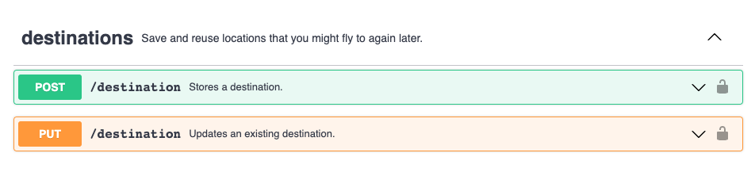
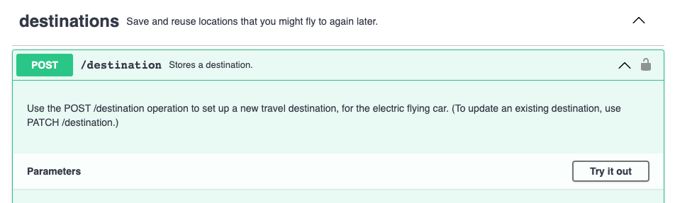

What's missing from your Swagger docs: How to ensure completeness when working with OpenAPI 3
It's easy to assume that the OAS3 spec results in documentation with more accuracy or completeness compared to documentation that isn't programmatically generated. Not necessarily. The spec is ultimately written by humans, and information can be missing or incorrect.
For example:
Lack of a description can leave users unable to figure out how an endpoint works, or even what it does.
The docs can incorrectly state that a parameter is required when it is not (and vice versa).
They can indicate that a parameter is a string and not mention that there are only three possible values.
They can lack examples.
Those are common occurrences in OAS3 specs.
Don't assume, therefore, that the OAS3 spec is more reliable than ordinary documentation or ordinary code. Verify the correctness and completeness whenever you add new information to the spec.
Verifying the correctness requires its own set of practices. There is no guarantee that the API will behave the way the spec says it will. It's a good practice to test-drive and verify every endpoint, but that's a topic for another day.
Completeness of the OAS3 spec is the focus for the rest of this article.
Provide a description for everything that needs one
Descriptions comprise the most important part of the spec. Documentation calls for effective descriptions and it requires an effort to include the descriptions in every place where one can be included. That might sound like a lot, so I'll elaborate.
When it comes to describing API properties, err on the side of explaining too much, because a reference document is like a dictionary —— you don't have to read the entries that you don't need. But when an entry is completely lacking it can stop you cold. Therefore, provide a description for everything.
Don't think that thorough naming will eliminate the need for descriptions. You might think your naming makes the purpose of something evident, but the words you choose for labels will always have different associations for other people. If the description is omitted some readers will become lost or frustrated because they don't understand how the endpoint is supposed to work.
Describe what the entire service does
Include a description at the top of the spec:
swagger: "3.0"
info:
description: "This is the API for your electric flying vehicle . . ."
Include a general description of what the service does, with just enough detail so that readers know whether they are in the right place. (When I say service here, I mean the level of the interface that is described by the entire spec. Your product might fit into one spec, but it might require multiple specs or dozens of them.)
If the service belongs to a larger set of services, explain any rules of usage that apply only to the endpoints in this service. For example: Is there a filtering or querying language to limit the amount of data returned in the response? Are there any terms or concepts that might trip users up? (If so, be brief.) Is there anything else idiosyncratic about this service that users might need to know?
Describe collections
When grouping operations with tags to create a collection, include a root-level global tags section near the top of the spec so that you can include a description for each tag. For example:
swagger: "3.0"
info:
description: "This is the API for your electric flying vehicle . . ."
host: "flying_machine.swagger.io"
basePath: "/v0"
tags:
- name: "destinations"
description: "Save and reuse locations where you might land again later."
- name: "appointments"
description: "Keep track of appointments and automate your travel to and from them, \
so that you can keep your commitments in the order that you want to."
The tags section begins on line six. Each entry includes a tag name and a description.
Descriptions of a collection might include:
Describe briefly what the collection is for.
Define any terms or concepts that are unique to the collection.
Describe endpoints
Each endpoint requires both a two- or three-word summary and a longer description. When I use the term endpoint, I mean a URL path combined with a single HTTTP verb. By that definition, each of the basic reference entries in your output represent an endpoint. Using both the summary and the description maximizes the usability of your final documentation. In docs built by Swagger UI and other tools, readers will see the summary when they scroll down the entire page, with most of the content collapsed. They'll see the longer description when they click on an endpoint entry and expand it.
Here's an example:
paths:
/destination/:
post:
tags:
- "destinations"
summary: "Creates a new destination."
description: "Use the POST /destination operation to set up a _new_ travel destination, \
for a place that you might want to revisit repeatedly. (To update an existing destination, \
use PATCH /destination.)"
The two following examples show some output with all the necessary summaries and descriptions.
The example above shows the default state of Swagger UI output. All the content is collapsed, but each entry has a _skimmable_ summary.
This example shows one item expanded to reveal the longer description. This is the place to put any important information about usage of the endpoint.
Description of an individual endpoint might include:
What does it do? In other words, what is the benefit for the user of the API?
When and why would a user need the endpoint? This is especially important if there is a similar endpoint that can do approximately the same thing. Clarify when the user should choose one versus the other.
Are there any warnings the user would need about what then endpoint does (e.g. does it delete data or users)?
Describe parameters and response properties.
Provide a description of all the parameters for every request and the properties for every response. Every single one.
Include everything users might need to know when utilizing the parameter or property.
What the parameter does. (The user should understand how changing the value will change the results.)
When and why would the user need it? This goes for response properties as well; users can be confused about what a piece of information is, and what you expect them to do with it.
Always provide an example value. The possible exceptions are for Booleans and for entries where you've already provided a default value. (Developers never complained about the presence of copious examples.)
Use the advice in the section following this one, with regard to providing all requirements so that a user can complete the API call.
Lastly, if you use an object for both the request and the response, be careful to write descriptions that work in either situation, and if this isn't possible, don't reuse the object.
Provide all the details that are essential to making an API call
Users need more than a description to successfully call the endpoint. You might already know about the attributes discussed in the following section, but they're omitted or incorrect frequently enough to be worth mentioning.
Consider this a checklist for your parameters:
Always indicate default values by using
default: <value>.Indicate the data type by using
typeandformat.If there is a limited range of acceptable values, provide them by using
enum.If the parameter is required in order to complete the call, use
required: trueUse
exampleto provide an example value.
Related OpenAPI 3.0 docs:
- OpenAPI 3.0 Specification
- Operations with tags
- Using enum
- Data types
- Parameters (Includes usage for
requiredanddefaultattributes.)